Selección Natural
Intro Bio I (B0160) - Módulo de Evolución
Metas
Introducir:
- La selección natural y adaptación
- Cómo la selección natural actúa sobre la variación genética
- Hardy-Weinberg y selección
- Diferentes tipos de selección
Ser capaces de
- Definir selección natural como cambio en frecuencias alélicas debido a diferencias en aptitud.
- Definir algunos de los diferentes tipos de selección (balanceadora, disruptiva, direccional).
- Reconocer cómo la selección mantiene alelos (diversidad genetica) a través de la ventaja del heterocigoto.
- Definir adaptacion como un rasgo heredable que origino por seleccion natural y aumenta la aptitud relativa.
- Entender la diferencia entre evolucion y adaptacion.
¿Qué es la selección natural?
Selección natural: proceso evolutivo donde los individuos con ciertos rasgos heredables tienen mayor supervivencia o reproducción que otros, causando cambios en las frecuencias alélicas dentro de poblaciones a lo largo del tiempo.
- Requiere variación heredable en la población.
- Requiere diferencias en aptitud (supervivencia o reproducción) entre genotipos.
- Resultado: cambio en frecuencias alélicas de una generación a la siguiente.
Anemia falciforme
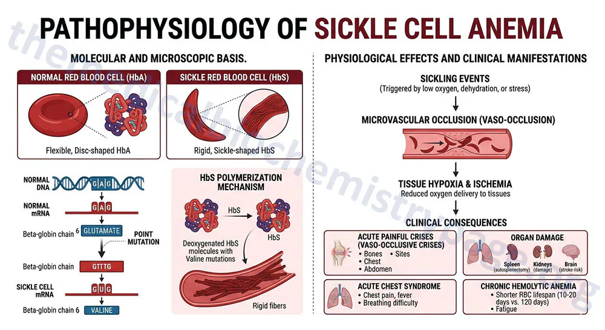
El locus de anemia falciforme
- A = hemoglobina normal
- S = alelo falciforme
| Genotipo | Fenotipo |
|---|---|
| AA | normal |
| AS | portador |
| SS | anemia falciforme |
La paradoja:
- SS tiene baja supervivencia.
- Sin embargo, S no desaparece.
Si SS es tan dañino, ¿qué debería pasar con S según nuestra intuición?
Frecuencia del alelo de anemia falciforme
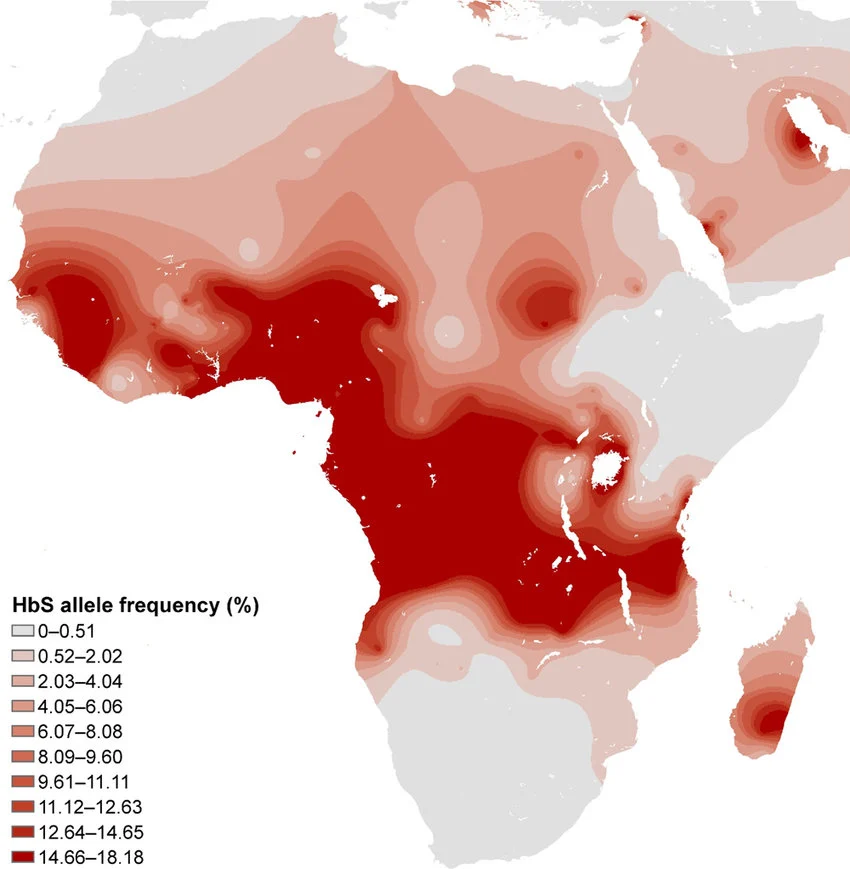
¿Por qué un alelo que causa una enfermedad grave sigue siendo relativamente común en algunas poblaciones humanas?
Selección natural.
¡Veamos cómo!
Malaria
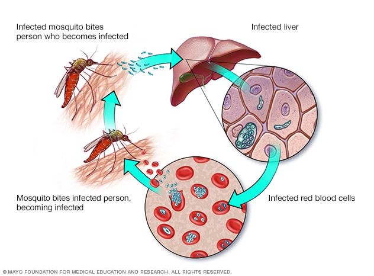
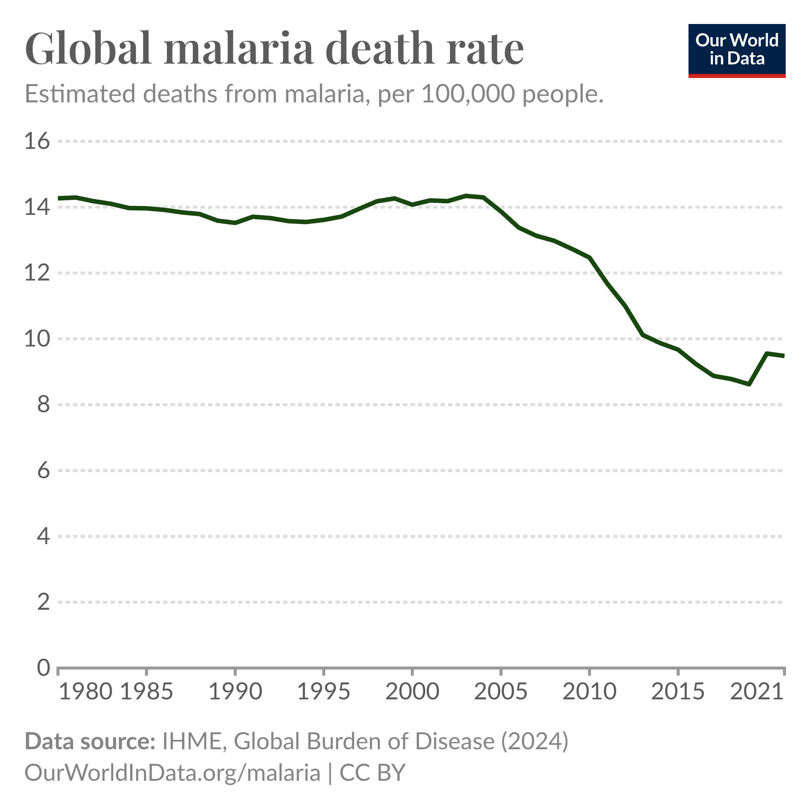
Distribuciones geográficas
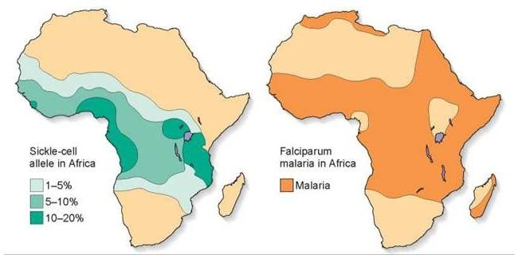
Las poblaciones humanas con alta frecuencia del alelo de anemia falciforme viven en regiones con alta incidencia de malaria.
¿Podría ser que el alelo de anemia falciforme sea de alguna forma útil para la resistencia a la malaria?
Anemia falciforme y malaria
Los heterocigotos para anemia falciforme (AS) presentan menor riesgo de malaria grave que los homocigotos normales (AA).
- Los heterocigotos producen principalmente eritrocitos normales, pero una fracción contiene hemoglobina S.
- Cuando un eritrocito es infectado por Plasmodium falciparum, el estrés fisiológico dentro de la célula favorece la deformación falciforme.
- Los eritrocitos infectados y deformados son reconocidos y removidos más rápidamente por el bazo.
- Como consecuencia, la carga parasitaria suele mantenerse más baja que en individuos AA.
- Esto reduce el riesgo de malaria grave y aumenta la supervivencia en regiones donde la malaria es común.
Combinando las dos presiones selectivas
| Genotipo | Malaria | Anemia falciforme |
|---|---|---|
| AA | Alta susceptibilidad | No |
| AS | Protección parcial | No o muy leve |
| SS | Protección parcial | Grave |
Agregando aptitud
| Genotipo | Malaria | Anemia falciforme | Aptitud |
|---|---|---|---|
| AA | Alta susceptibilidad | No | Intermedia |
| AS | Protección parcial | No o muy leve | Alta |
| SS | Protección parcial | Grave | Baja |
Ojo!
La selección natural ocurre dentro de una generación, cuando algunos individuos sobreviven o se reproducen más que otros.
La evolución se observa entre generaciones, cuando esas diferencias producen cambios en las frecuencias alélicas de la población.
Población en Hardy-Weinberg
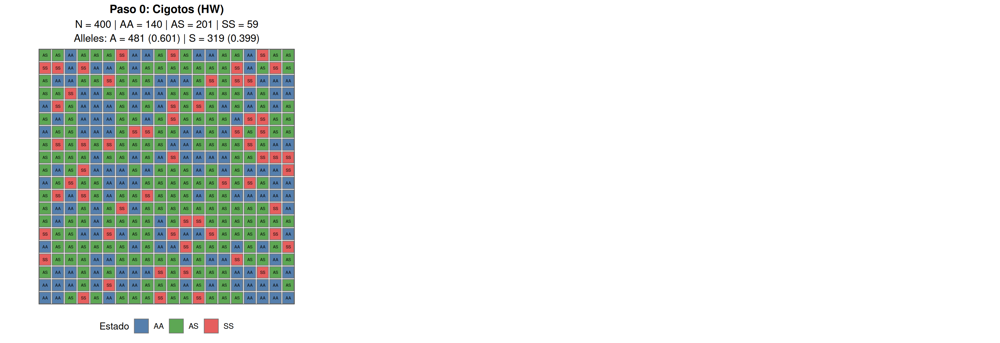
- \(p = 0.6; q = 0.4\)
- \(f(AA) = p^2 = 0.36; N_{AA} = 400 * 0.36 = 144\)
- \(f(AS) = 2pq = 0.48; N_{AS} = 400 * 0.48 = 192\)
- \(f(SS) = q^2 = 0.16; N_{SS} = 400 * 0.16 = 64\)
Selección natural
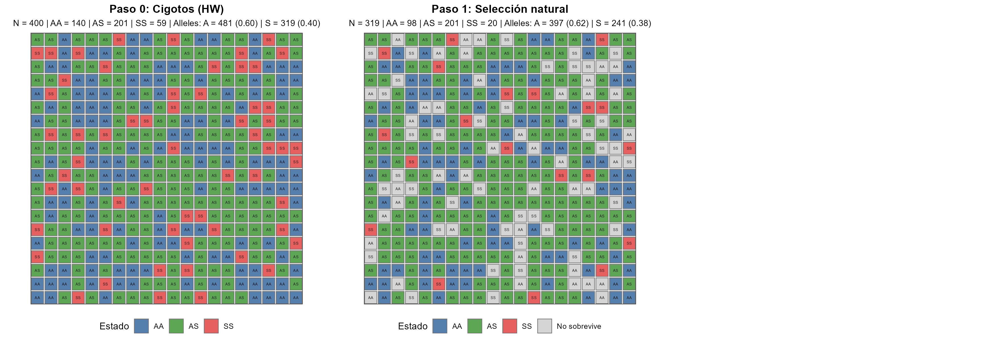
- Seleccion natural
- De un lado la anemia falciforme selecciona fuerte contra
SS - De otro lado la malaria selecciona mas fuerte contra
AA - Algunos individuos no sobreviven
Selección natural
- Algunos individuos no sobreviven
- La probabilidad de sobrevivir no es igual para todos los genotipos
- La supervivencia diferencial cambia las frecuencias alélicas
- La población en este momento no está en equilibrio Hardy-Weinberg
Selección natural
- \(N_{A} = 397; p = f(A) = \frac{N_{A}}{319 * 2} = 0.622\)
- \(N_{S} = 241; q = f(S) = \frac{N_{S}}{319 * 2} = 0.378\)
- \(f(AA) = p^2 = 0.622^2 = 0.387; N_{AA} = 319 * 0.387 \approx 123\)
- \(f(AS) = 2pq = 2 \times 0.622 \times 0.378 = 0.470; N_{AS} = 319 * 0.470 \approx 150\)
- \(f(SS) = q^2 = 0.378^2 = 0.143; N_{SS} = 319 * 0.143 \approx 46\)
Apareamiento aleatorio
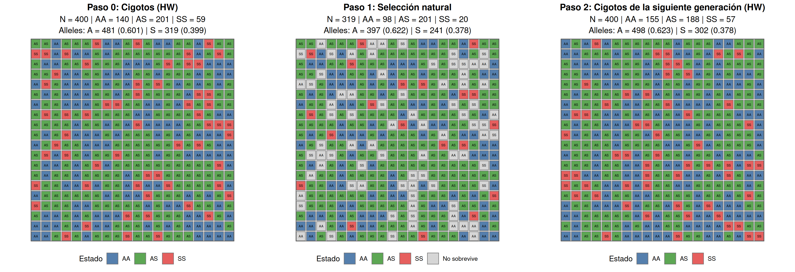
- Los sobrevivientes se aparean al azar
- Los cigotos vuelven a estar en proporciones de Hardy-Weinberg
- Pero ahora parten de frecuencias alélicas ligeramente distintas
- Es decir, están en euquilibrio Hardy-Weinberg pero para las nuevas frecuencias alélicas
Apareamiento aleatorio
- \(N_{A} = 498; p = f(A) = \frac{N_{A}}{319 * 2} = 0.622\)
- \(N_{S} = 140; q = f(S) = \frac{N_{S}}{319 * 2} = 0.378\)
- \(f(AA) = p^2 = 0.622^2 = 0.387; N_{AA} = 400 * 0.387 \approx 155\)
- \(f(AS) = 2pq = 2 \times 0.622 \times 0.378 = 0.470; N_{AS} = 400 * 0.470 \approx 188\)
- \(f(SS) = q^2 = 0.378^2 = 0.143; N_{SS} = 400 * 0.143 \approx 57\)
Y si la frecuencia de alelo falciforme S empieza muy baja?
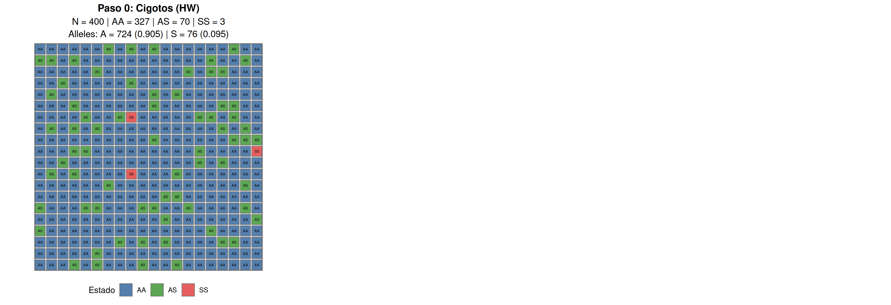
- Tarea: calcular si la población está en Hardy-Weinberg.
Selección natural
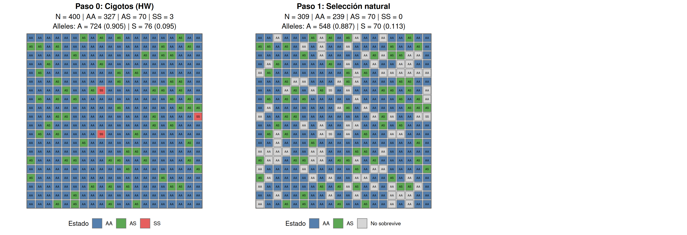
- Tarea: calcular si la población está en Hardy-Weinberg.
Apareamiento aleatorio
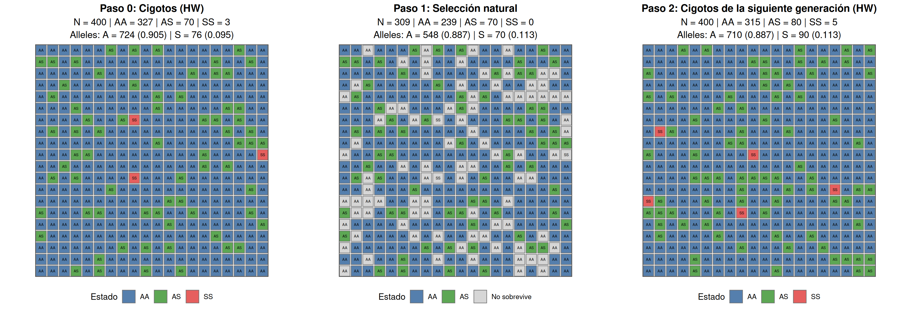
- Tarea: calcular si la población está en Hardy-Weinberg.
¿Qué suele pasar en las próximas generaciones?
- Si el entorno no cambia, por lo que las presiones selectivas siguen siendo las mismas,
- y si la diferencia en aptitud entre genotipos se mantiene,
Las frecuencias alélicas llegarán a un equilibrio donde las dos presiones selectivas están en balance.
Aproximación hacia el equilibrio alélico
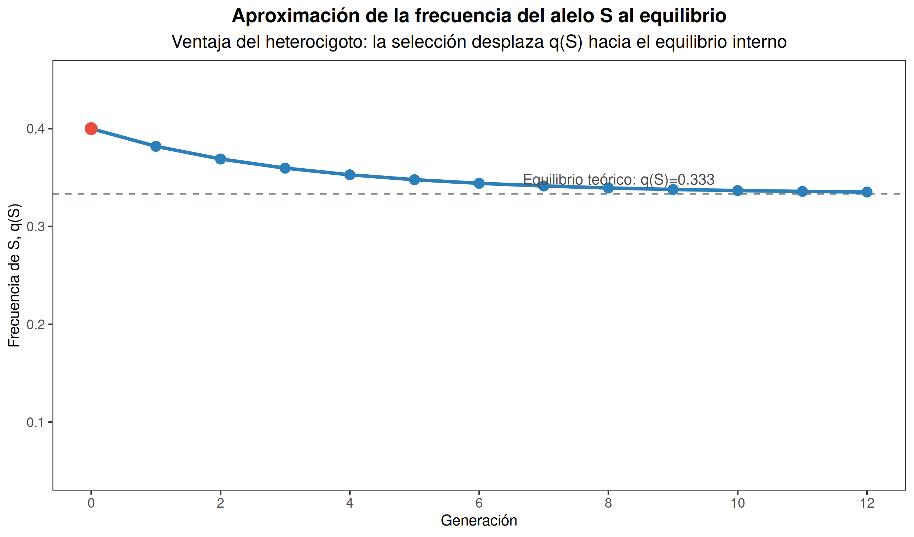
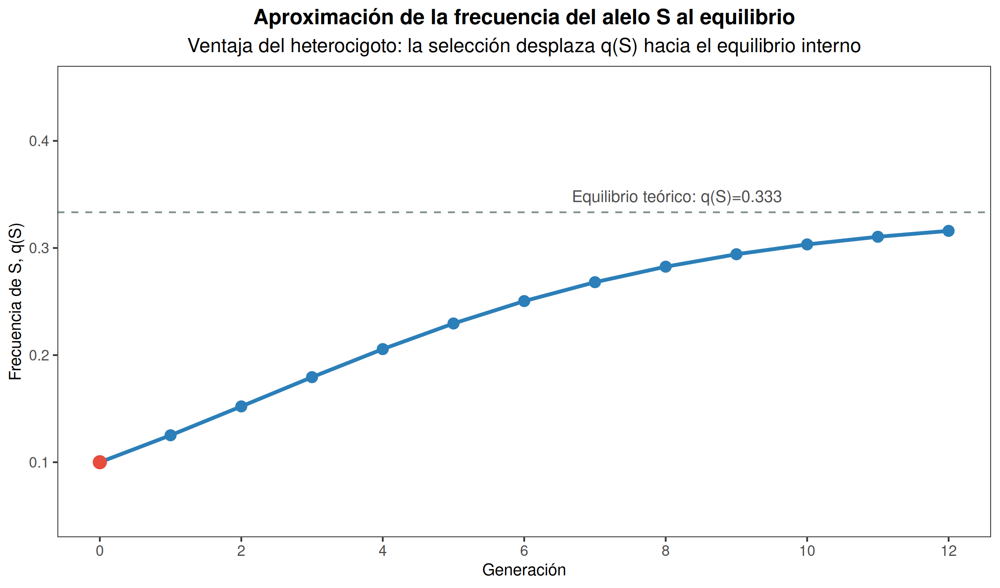
- Con \(w(AA)=0.7\), \(w(AS)=1.0\) y \(w(SS)=0.4\), el equilibrio interno esperado es \(q(S)=0.333\).
- Partiendo de \(q(S)=0.4\) o \(q(S) = 0.1\), la frecuencia del alelo S se acerca a ese valor generación tras generación.
- Aunque el alelo S es dañino en terminos absolutos, se mantiene en una frecuencia relativamente alta
Aptitud relativa por genotipo
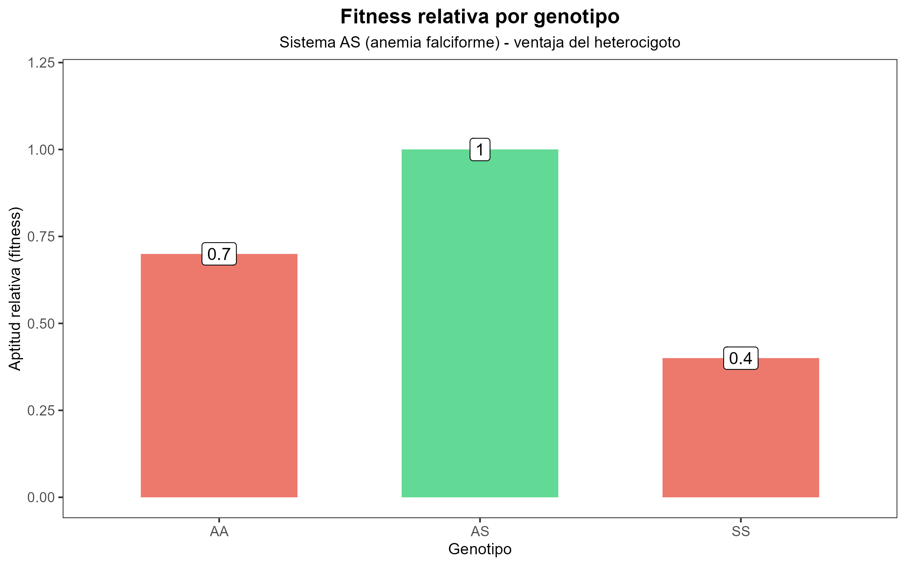
Aptitud relativa y coeficiente de selección
Aptitud relativa (\(\omega\)): la aptitud de un genotipo específico comparada con la del genotipo más apto en la población.
Coeficiente de selección: la desventaja de un genotipo. Es la tasa con la cual un genotipo es seleccionado en contra. Se calcula como \(s = 1 - \omega\).
| Genotipo | Aptitud | \(\omega\) | \(s = 1 - \omega\) |
|---|---|---|---|
| AA | Intermedia | 0.7 | 0.3 |
| AS | Alta | 1 | 0 |
| SS | Baja | 0.4 | 0.6 |
Selección balanceada
Definición: selección balanceada es selección natural que mantiene la diversidad genética, conservando múltiples alelos en una población en lugar de favorecer la fijación de uno de ellos.
- Mecanismo clásico: ventaja del heterocigoto.
- La aptitud del heterocigoto es mayor que la de ambos homocigotos.
- Mantiene polimorfismos genéticos estables en la población.
Selección direccional
Un alelo o genotipo es más apto que los demás
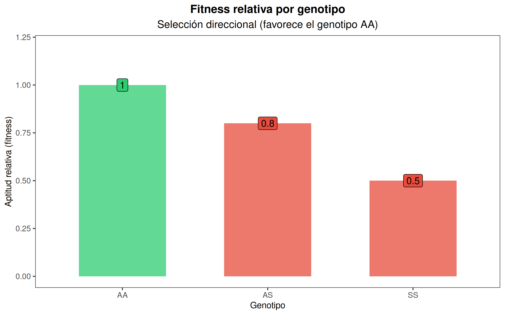
- Pinzones de Daphne Major (Galápagos) durante la sequía de 1977
- Polillas de Manchester durante la industrialización
- Resistencia a antibióticos en bacterias
Selección direccional
Definición: selección direccional favorece consistentemente a un fenotipo, alelo o genotipo sobre los demás, aumentando su frecuencia a través del tiempo.
- Mecanismo: un genotipo tiene mayor aptitud que los otros.
- Favorece una dirección particular de cambio evolutivo.
- Puede conducir a la fijación de un alelo.
- Tiende a reducir la variación genética local.
Pinzones de Daphne Major (1977)
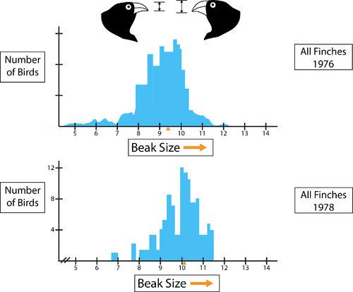
- La sequía alteró la disponibilidad de semillas.
- Las semillas pequeñas se volvieron escasas, mientras que las semillas grandes permanecieron disponibles.
- Los individuos con picos pequeños presentaron una mortalidad más alta.
- Como resultado, aumentó la frecuencia de individuos con picos más grandes en la población.
Polillas de Manchester
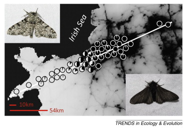
- La industrialización provocó altos niveles de contaminación atmosférica.
- El hollín oscureció los troncos de los árboles y modificó el hábitat de las polillas.
- Las polillas de color claro se volvieron más visibles para los depredadores.
- Como resultado, aumentó la frecuencia de polillas de color oscuro en la población.
Pinzones! Otra vez?

- El ambiente cambia.
- Las presiones de selección cambian.
- La aptitud relativa de los distintos fenotipos cambia.
- Como consecuencia, cambia la distribución de rasgos dentro de la población.
El ambiente determina qué rasgos son ventajosos; cuando el ambiente cambia, la selección también puede cambiar.
Selección diversificadora
Los fenotipos extremos son más aptos que los intermedios
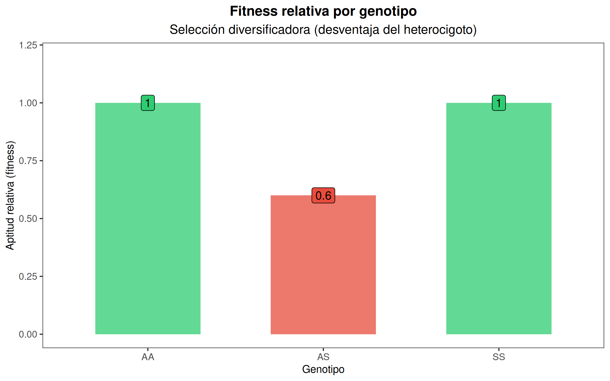
- Pinzón semillero africano
- Threespine stickleback en lagos
- Especialización sobre diferentes recursos alimenticios
- Especialización sobre distintos hospederos en insectos
Selección diversificadora (disruptiva)
Definición: selección diversificadora favorece fenotipos extremos sobre los fenotipos intermedios.
- Mecanismo: los individuos intermedios presentan menor aptitud.
- Favorece la divergencia dentro de una población.
- Puede contribuir a la especialización ecológica.
- En algunos casos puede favorecer procesos de especiación.
Pinzón semillero africano
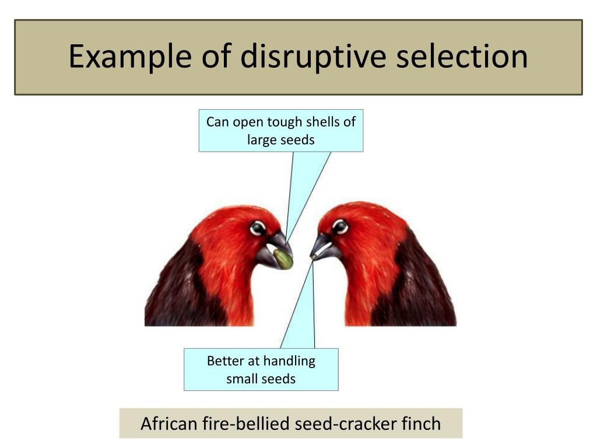
- Individuos con picos grandes son mejores a romper semillas grandes
- Individuos con picos pequeños son mejores a manejar semillas pequeñas
- Individuos con picos intermedios tienen desventaja y menor aptitud.
- A lo largo del tiempo, la frecuencia de individuos con picos intermedios disminuye.
Threespine stickleback
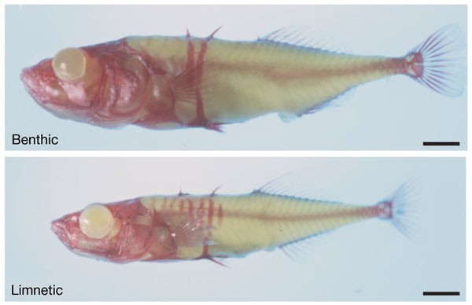
- Los individuos grandes se observan con mayor frecuencia cerca de la orilla del lago, donde consumen insectos grandes.
- Los individuos pequeños se observan con mayor frecuencia en la zona de agua abierta, asociados al consumo de zooplancton.
- Los fenotipos intermedios muestran menor aptitud, por lo que su frecuencia disminuye.
Adaptación
Definicion
Una adaptación es un rasgo heredable que aumenta la aptitud de los individuos en un ambiente determinado como resultado de la selección natural.
- Las adaptaciones evolucionan en poblaciones, no en individuos.
- Una adaptación aumenta la aptitud relativa en un ambiente particular.
- Un rasgo puede ser adaptativo en un ambiente y no en otro.
- Las adaptaciones no son necesariamente perfectas.
¿Por qué los picos grandes son una adaptación?
¿Es un pico grande siempre mejor?
- Año húmedo -> muchas semillas pequeñas.
- Año seco -> muchas semillas grandes.
- No existe un “mejor” pico en términos absolutos.
El valor adaptativo de un rasgo depende del ambiente.
¿Por qué las alas oscuras son una adaptación?
- Antes de la industrialización: alas claras -> mayor aptitud.
- Después de la industrialización: alas oscuras -> mayor aptitud.
El valor adaptativo de un rasgo depende del ambiente.
No todo rasgo es una adaptación
- Algunos rasgos evolucionan por deriva genética.
- Algunos rasgos son subproductos de otras adaptaciones.
- Algunos rasgos fueron adaptativos en el pasado, pero ya no lo son.
- Para demostrar adaptación debemos mostrar una ventaja en aptitud.
¿Cuál es la diferencia entre evolución y adaptación?
Evolución es cualquier cambio en las frecuencias alélicas de una población.
Adaptación es el proceso por el cual la selección natural produce rasgos que aumentan la aptitud en un ambiente determinado.
La escala temporal y geográfica
Selección direccional
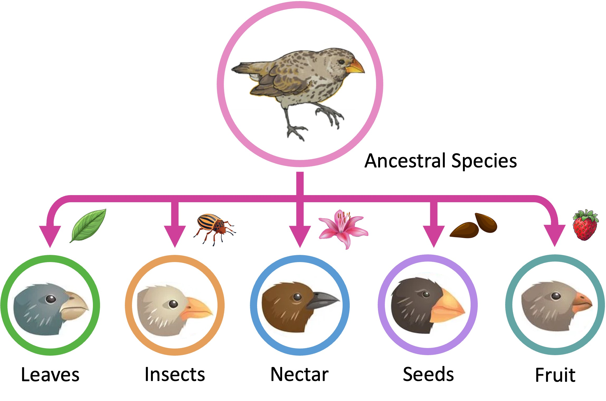
Divergencia adaptativa
¡La escala importa!
- Los pinzones pueden ilustrar distintos patrones evolutivos dependiendo de la escala temporal y espacial considerada.
Isla Daphne Major (1977)
- Una población
- Una isla
- Unas pocas generaciones
El proceso observado es consistente con selección direccional hacia picos más grandes durante la sequía.
Archipiélago de Galápagos
- Muchas poblaciones
- Muchas islas
- Millones de años
El resultado es consistente con divergencia adaptativa hacia diferentes nichos ecológicos y recursos.
Resumen
- La selección natural requiere variación heredable y diferencias en aptitud, y produce cambios en frecuencias alélicas.
- En anemia falciforme, la ventaja del heterocigoto (AS) en ambientes con malaria puede mantener el alelo S (selección balanceada).
- La selección direccional favorece consistentemente un fenotipo; la selección diversificadora favorece fenotipos extremos.
- Una adaptación es un rasgo heredable cuyo valor depende del ambiente; no todo rasgo es necesariamente una adaptación.
- La escala importa: un patrón de corto plazo en una población puede conectarse con divergencia adaptativa a gran escala temporal y geográfica.